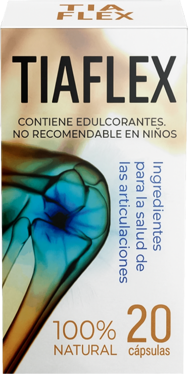

TIAFLEX es un suplemento natural diseñado para fortalecer las articulaciones, recuperar la flexibilidad y mejorar la movilidad. Su fórmula combina ingredientes poderosos, que nutren las articulaciones con vitaminas y minerales esenciales, previenen la inflamación, y refuerzan el tejido cartilaginoso. Además, alivian el dolor y prolongan la vida del sistema musculoesquelético, mientras que protegen las células de las articulaciones del estrés oxidativo. También, que fortalecen los tejidos conjuntivos y protegen contra los daños de los radicales libres, asegurando así una protección integral y efectiva para las articulaciones. Los componentes activos penetran directamente en la cavidad de la cápsula de la articulación, bloquean la inflamación y estimulan la regeneración del cartílago dañado desde su interior. Se puede observar una dinámica positiva desde los primeros días de uso: se reducen la inflamación y el dolor durante el movimiento. Al final del tratamiento, la articulación degenerativa vuelve a estar sana y recupera su movilidad natural, sin inyecciones, cirugías ni otros métodos dudosos. El dolor articular no solo es molesto sino que además es incapacitante, produce un deterioro en la calidad de vida del paciente, algunas de sus manifestaciones son, dolor y crujido en articulaciones, rigidez y limitación de movilidad, deterioro de la motricidad fina en manos, calambres en extremidades, sensibilidad a cambios de temperatura, deformación de cartílagos, todos estos síntomas pueden. TIAFLEX sirve para personas que padecen enfermedades articulares o lesiones de las articulaciones, ayuda a restablecer la salud articular, reduce el dolor, aumenta el flujo sanguíneo en la zona afectada lo cual se ve reflejado en la disminución de la inflamación y reducción paulatina del dolor. Debes tomar una cápsula dos veces al día, por la mañana y por la noche, media hora antes de las comidas. Siguiendo esta posología diaria, verás resultados importantes en la recuperación articular. Es recomendable tomar el suplemento durante al menos un mes para obtener los mejores resultados. TIAFLEX es completamente natural, por lo que no tiene efectos secundarios ni contraindicaciones. Sin embargo, se recomienda consultar a un médico antes de iniciar cualquier tratamiento, especialmente si se está tomando otros medicamentos o se tienen condiciones de salud preexistentes.